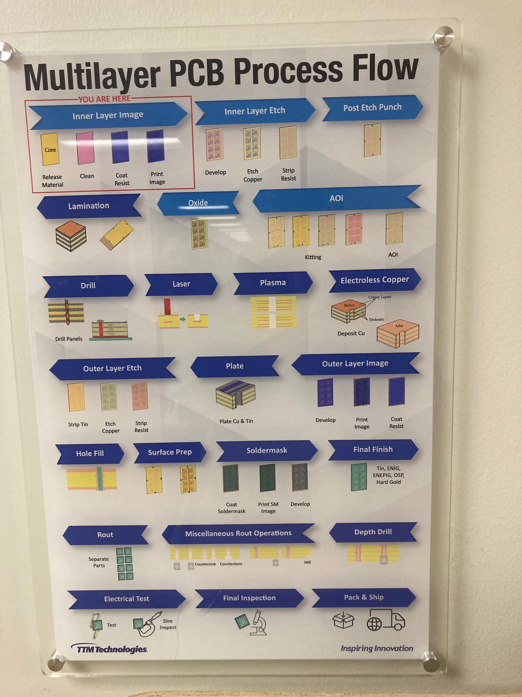

Translating Technical Concepts Effectively

At TTM Technologies, I learned that a critical skill for engineers is the ability to "dumb down" complex technical information based on the audience's expertise. As Nate explained: "You have to consider... the audience's knowledge." Failing to tailor information can lead to misunderstandings, errors, and project delays.
Here's how to adapt information effectively:
- Focus on business impact (cost, timeline, quality)
- Use analogies to familiar concepts
- Highlight risks and opportunities
- Provide clear recommendations
For Clients
- Emphasize how it affects their product or project goals.
- Avoid manufacturing jargon; explain terms simply if necessary.
- Use visual aids when possible (diagrams, photos).
For Colleagues in Other Departments (e.g., Sales, Production, QA)
- Explain your department's constraints and how they impact shared processes.
- Find common ground in shared goals (e.g., quality, efficiency, meeting deadlines).
- Clarify how your work impacts theirs and vice-versa to build understanding.
- Be open to their perspective and knowledge from their area of expertise.
Example: Explaining the PCB Process to People
Understanding how to explain the same technical issue differently based on who needs the information is vital for effective communication. Here's an example of explaining the general PCB process to different audiences:
| Audience | Explanation Tailored For Them |
|---|---|
| Knowledgeable Engineer | "A multilayer PCB starts with preparing the inner layers by applying resist and imaging the circuit pattern, followed by etching away unwanted copper. These layers are then laminated together before we drill holes and apply outer layer circuitry. The process continues with plating, soldermask application, and final finishing before electrical testing and shipping." |
| Friend with NO PCB Experience | "Printed circuit boards are like electronic sandwiches - we start by printing circuit patterns on thin copper sheets, then stack these layers together with special glue. After drilling holes to connect the layers, we add more copper connections and a protective green coating. Finally, we add metal finishes that allow electronic components to be put onto the board. It's a multi-step process that creates those green boards you see inside all your electronic devices." |
Technical Translation Exercise
Consider how to explain these technical concepts to someone with less PCB knowledge.
Think of a technical concept in your field of expertise, and try to explain it out loud to someone who may know very little about that field. How would you do this?
Imagine you're explaining the **drilling process** to someone who has never worked with circuit boards before. Which of these explanations would be the clearest?
We make holes in the board.
We use a CNC machine to create vias for electrical connections between layers.
It's like carefully making tiny tunnels through the different layers of the board so we can connect them together with wires later on.
Drilling is a step in the circuit board manufacturing process.